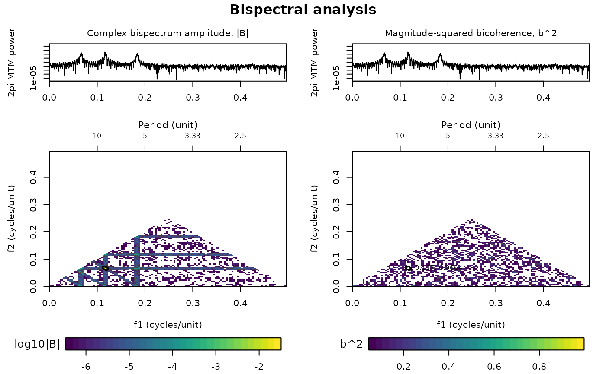

Bispectral analysis: bispectrum, biphase and squared bicoherence
Source:R/bispectral_analysis.R
bispectral_analysis.RdThe bispectral_analysis function estimates the
complex bispectrum \(B(f_1,f_2) = mean[X(f_1) X(f_2) conj(X(f_1+f_2))]\),
the biphase \(arg B\) and the Kim and Powers (1979) magnitude-squared
bicoherence (bounded in [0,1]) of an evenly or unevenly sampled series.
Two estimators are available: a direct FFT bispectrum averaged over
tapered (WOSA/Welch) segments, and a two-dimensional hexagonal
frequency-smoothed direct estimate on the native DFT grid. The numerical
domain is the non-redundant positive principal domain
(\(k_2 \le k_1\), \(k_1+k_2\) below Nyquist).
Before estimation the series is cleaned (non-finite rows removed, sorted,
duplicate coordinates averaged), regularised by interpolation when the
sampling is irregular, detrended and optionally standardised.
Optional inference: an analytical Beta(1,R-1) pointwise reference, pointwise
Monte Carlo surrogate thresholds, or a global maximum-statistic surrogate
test (family-wise error control over the full computed principal domain)
using Fourier-transform (FT) phase-randomised or IAAFT surrogates
(Schreiber and Schmitz, 1996) with plus-one Monte Carlo p-values.
High bicoherence indicates repeatable quadratic phase coupling at
\((f_1,f_2,f_1+f_2)\); it is not by itself evidence of causality or energy
transfer.
Translated from Acycle v3.1 bispectralAnalyze.m, bispectralDefaults.m,
bispectralPreprocess.m, bispectralEstimate.m and bispectralSignificance.m
(Mingsong Li).
Usage
bispectral_analysis(
data = NULL,
estimator = NULL,
n_segments = NULL,
overlap = 50,
window = "hann",
segment_detrend = "mean",
smoothing_span = 3,
smoothing_kernel = "daniell",
detrend = "linear",
poly_order = 2,
standardize = TRUE,
interpolate = "auto",
interp_method = "linear",
sample_interval = NULL,
irregular_tol = 0.01,
gap_warning_factor = 5,
input_policy = "prepare",
nfft = NULL,
zero_pad = 1,
max_freq_bins = 512,
significance = "none",
conf_level = 0.95,
n_sim = 999,
surrogate_type = "iaaft",
iaaft_iter = 200,
iaaft_tol = 0.02,
max_attempts = NULL,
seed = NULL,
genplot = FALSE,
verbose = FALSE,
standardise = NULL
)Arguments
- data
Series to analyse (numeric matrix or data frame with at least two columns: depth or time in column 1, proxy value in column 2; further columns are ignored). At least 32 finite observations with distinct coordinates are needed; even or uneven sampling (see
interpolate). Required, no default (Default=NULLgives an error).- estimator
Bispectrum estimator (character):
"wosa"(direct FFT bispectrum averaged over tapered, overlapping segments; also"welch") or"frequency-smoothed"(direct estimate on the native DFT grid smoothed with a hexagonal kernel).NULLchooses as Acycle does:"wosa", unless three 32-point segments do not fit, then"frequency-smoothed".Default=NULL.- n_segments
Number of WOSA segments (integer, >= 3); more segments give a more stable estimate with a coarser frequency resolution.
NULLuses min(8, maximum number of 32-point segments) as in Acycle.Default=NULL.- overlap
Overlap of adjacent WOSA segments in percent (numeric, 0 <= overlap < 90).
Default=50.- window
Taper applied to every segment (character):
"hann","hamming","blackman"or"rectangular"(no taper).Default="hann".- segment_detrend
Detrending applied to each segment (or to the whole record for the frequency-smoothed estimator) before the FFT (character):
"none","mean"or"linear".Default="mean".- smoothing_span
Span of the hexagonal frequency-smoothing kernel of the frequency-smoothed estimator (odd integer, >= 3; 3 averages 7 triads); larger spans give a smoother, lower-resolution estimate.
Default=3.- smoothing_kernel
Weights of the hexagonal smoothing kernel (character):
"daniell"(uniform) or"cosine"(raised cosine).Default="daniell".- detrend
Detrending of the whole record before the estimation (character):
"none","mean","linear"or"polynomial"(orderpoly_order).Default="linear".- poly_order
Order of the polynomial removed when
detrend = "polynomial"(integer, 1 to 10 and below N - 1).Default=2.- standardize
Standardise the series to zero mean and unit standard deviation after detrending (logical, TRUE or FALSE).
Default=TRUE.- interpolate
When the series is interpolated onto a regular grid (character):
"auto"only when the sampling is irregular (seeirregular_tol),"always", or"never"(an irregular series then gives an error).Default="auto".- interp_method
Interpolation method for the regular grid (character):
"linear","pchip"(shape-preserving piecewise cubic) or"makima"(modified Akima).Default="linear".- sample_interval
Sample interval of the regular grid, in the unit of the first column of
data(numeric, > 0, not coarser than the median original spacing);NULLuses the median original spacing.Default=NULL.- irregular_tol
Largest relative departure of the sample spacing from the grid interval that is still treated as regular sampling, used with
input_policy = "prepare"(numeric, >= 0).Default=0.01.- gap_warning_factor
Largest original gap, in sample intervals, above which a warning about interpolation across gaps is stored in the result (numeric, > 0).
Default=5.- input_policy
How irregular input is handled (character):
"prepare"cleans the input (removes non-finite rows, sorts, averages duplicate coordinates) or"strict"refuses non-finite, unsorted or duplicated rows with an error.Default="prepare".- nfft
FFT length of every WOSA segment (positive integer);
NULLuses round(segment length xzero_pad). Ignored by the frequency-smoothed estimator.Default=NULL.- zero_pad
Zero-padding factor of the WOSA segments, used when
nfft = NULL(numeric, > 0).Default=1.- max_freq_bins
Maximum number of frequency bins computed along each frequency axis (integer, >= 16); larger grids are decimated with a constant stride to limit computing time and memory.
Default=512.- significance
Type of inference on the bicoherence (character):
"none","analytical"(Beta(1, R - 1) pointwise reference),"pointwise"(pointwise surrogate thresholds) or"global"(maximum-statistic surrogate test with family-wise error control over the computed principal domain).Default="none".- conf_level
Confidence level of the significance threshold (numeric, strictly between 0.5 and 1).
Default=0.95.- n_sim
Number of accepted surrogates for
significance = "pointwise"or"global"(integer, 19 to 99999, and large enough to reach 1 -conf_level).Default=999.- surrogate_type
Type of surrogate (character):
"iaaft"(iterative amplitude-adjusted Fourier transform, keeps both spectrum and amplitude distribution) or"ft"(Fourier phase randomisation).Default="iaaft".- iaaft_iter
Maximum number of IAAFT iterations per surrogate (positive integer).
Default=200.- iaaft_tol
Largest accepted relative Fourier-amplitude error of an IAAFT surrogate (non-DC, non-Nyquist bins); worse surrogates are rejected and replaced (numeric, 0 < iaaft_tol <= 1).
Default=0.02.- max_attempts
Maximum number of surrogate attempts, including rejected ones (integer, >=
n_sim);NULLallowsn_sim+ max(10, ceiling(0.1n_sim)).Default=NULL.- seed
Seed of the random number generator (integer), so that the surrogates can be reproduced;
NULLleaves the current random state unchanged.Default=NULL.- genplot
Plot the result with
plot_bispectral(logical, TRUE or FALSE).Default=FALSE.- verbose
Print progress messages and a progress bar for the surrogates (logical, TRUE or FALSE).
Default=FALSE.- standardise
British spelling of
standardize; if given it overridesstandardize.Default=NULL.
Value
A list with elements
frequency (computed frequency axis, cycles per unit),
bispectrum (complex matrix; rows = f2, columns = f1; NA outside the
principal domain), bispectrum_magnitude, biphase (radians,
NA where undefined), bicoherence_squared, denominator,
valid_mask, principal_domain_mask, power (segment-
averaged power on the frequency axis), pair_index,
pair_bicoherence_squared, meta (estimator settings and
diagnostics), processed_data (2-column processed series),
preprocessing (list), significance (list with
method, threshold, threshold_matrix, p_value,
significant_mask, surrogate_maxima,
surrogate_spectral_errors, attempt/rejection counts and warnings),
significant_mask and warnings.
References
Kim, Y.C., Powers, E.J., 1979. Digital bispectral analysis and its applications to nonlinear wave interactions. IEEE Transactions on Plasma Science 7, 120-131.
Choudhury, M.A.A.S., Shah, S.L., Thornhill, N.F., 2008. Diagnosis of Process Nonlinearities and Valve Stiction. Springer.
Schreiber, T., Schmitz, A., 1996. Improved surrogate data for nonlinearity tests. Physical Review Letters 77, 635-638.
Li, M., Hinnov, L., Kump, L., 2019. Acycle: Time-series analysis software for paleoclimate research and education. Computers & Geosciences 127, 12-22.
Examples
# \donttest{
# quadratic phase coupling: f3 = f1 + f2 with phase3 = phase1 + phase2 + 0.4
set.seed(1)
seg_len <- 256
n_seg <- 16
t <- 0:(seg_len * n_seg - 1)
y <- numeric(length(t))
f1 <- 30 / seg_len
f2 <- 17 / seg_len
for (s in seq_len(n_seg)){
idx <- (s - 1) * seg_len + seq_len(seg_len)
p1 <- 2 * pi * runif(1)
p2 <- 2 * pi * runif(1)
y[idx] <- cos(2 * pi * f1 * t[idx] + p1) +
0.85 * cos(2 * pi * f2 * t[idx] + p2) +
0.65 * cos(2 * pi * (f1 + f2) * t[idx] + p1 + p2 + 0.4) +
0.18 * rnorm(seg_len)
}
res <- bispectral_analysis(data = cbind(t, y), n_segments = 16,
overlap = 0, detrend = "none", max_freq_bins = 256,
significance = "global", n_sim = 19, seed = 1, genplot = TRUE)

# }